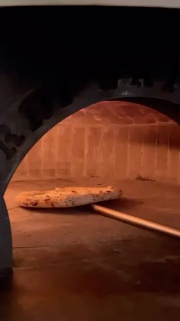
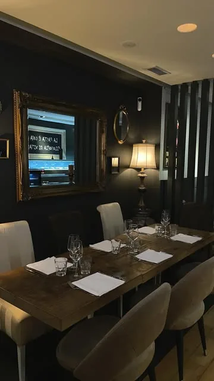
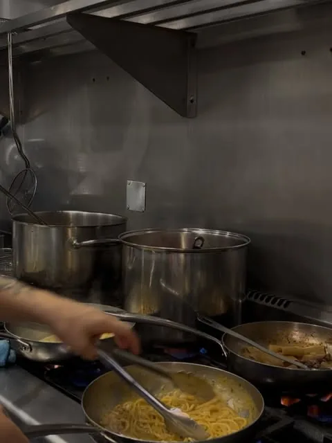
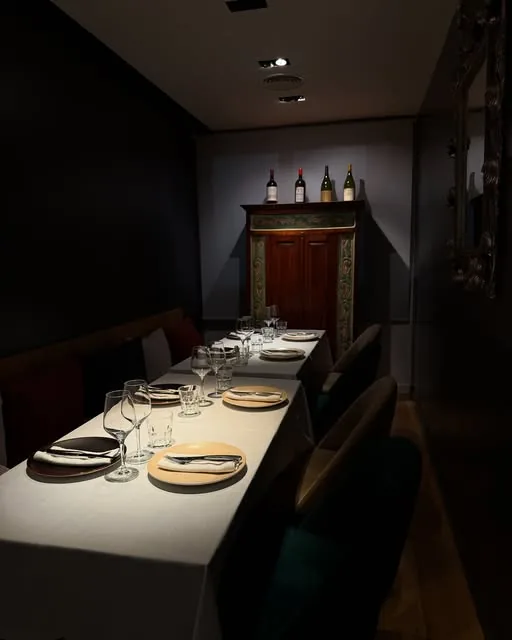
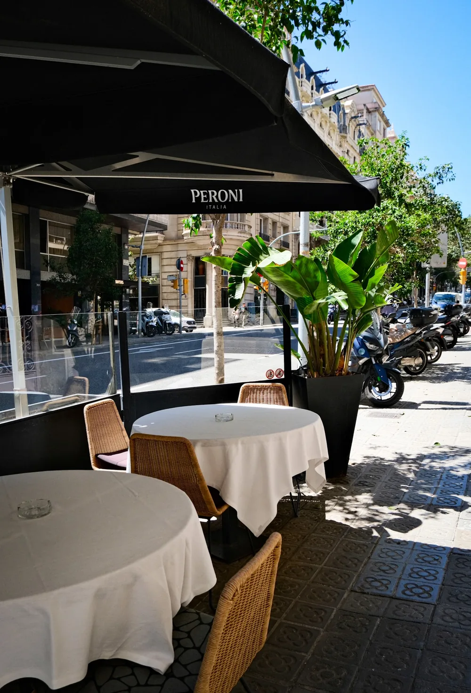

Carpaccio di manzo
Filet en làmines fines amb parmesà de 24 mesos.
Cuina de tradició, servida amb la discreció d'una bona casa de Sant Gervasi.



La Casa
La muntanya que dibuixa el nostre logo és el Vesuvi. Vam voler que hi fos perquè de Nàpols vénen les nostres receptes.
Cuinem els plats que al sud d'Itàlia se serveixen a casa: la parmigiana d'albergínia, els linguine amb llamàntol, els paccheri amb tòfona negra, la pizza acabada de sortir del forn. El tiramisù es prepara cada matí.
Bella és a Sant Gervasi, entre la Diagonal i Via Augusta. A més del menjador, la casa disposa d'un saló privat per a grups i d'una terrassa al carrer Muntaner.
La Cucina
Sis plats de la carta que expliquen bé la nostra cuina.
Llamàntol, cloïsses i tomàquet cherry. Una recepta senzilla que depèn del tot del producte.
Botifarra, bolets de temporada, mozzarella, parmesà, demi-glace i tòfona negra. Un plat generós, per a qui arriba amb gana.
Capes d'albergínia, tomàquet i mozzarella, gratinades al forn amb parmesà.
Mig quilo de vedella servida en tagliata, amb demi-glace i patates al forn. Pensada per compartir.
Elaborada a l'estil napolità i cuita al nostre forn.
Es prepara cada matí segons la recepta clàssica. Són les postres de la casa.
Gli Spazi
Per a dinars de feina i per a sopars sense presses.
Taules parades, llum tènue i miralls de marc daurat. El menjador principal de la casa.

Un saló independent amb una taula llarga, reservat per a celebracions, dinars d'empresa i grups.

Unes poques taules a la vorera del carrer Muntaner, a l'ombra dels arbres.
Eventi privati
Per a celebracions i dinars d'empresa, el saló privat es pot reservar per al seu grup. Truqui'ns i ho organitzem amb vostè.
Excepcional. En todos los sentidos.
Álvaro G. · Google
We found a jewel while looking for a place to have lunch.
Spencer V. · Google
Domande frequenti
Al carrer de Muntaner, 328 (08021 Barcelona), a Sant Gervasi, a pocs minuts a peu de la Diagonal.
Cuina italiana de tradició napolitana: pastes, pizza al forn, carns i postres de la casa, com el tiramisù que preparem cada matí.
Dimarts i diumenge, de 13:30 a 16:00. De dimecres a dissabte, de 13:30 a 16:00 i de 20:30 a 23:30. Els dilluns romanem tancats.
En línia, des d'aquesta mateixa pàgina, o per telèfon al 933 03 44 82.
Sí. Li preguem que ens comuniqui qualsevol al·lèrgia o intolerància en fer la reserva.
Sí. El saló privat acull celebracions, dinars d'empresa i grups. Truqui'ns i el preparem amb vostè.
Sí, al mateix carrer Muntaner.
Prenota
Pot reservar en línia o per telèfon. Per a grups, li recomanem que ens truqui.
| Dilluns | Tancat |
|---|---|
| Dimarts | 13:30 – 16:00 |
| Dimecres | 13:30 – 16:00 20:30 – 23:30 |
| Dijous | 13:30 – 16:00 20:30 – 23:30 |
| Divendres | 13:30 – 16:00 20:30 – 23:30 |
| Dissabte | 13:30 – 16:00 20:30 – 23:30 |
| Diumenge | 13:30 – 16:00 |